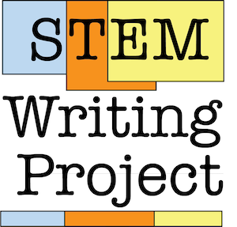

Biology Student Writing Guide
2021-07-29

This compilation work is licensed under a Creative Commons Attribution-NonCommercial-ShareAlike 4.0 International License. Photos, other artwork and text that are not original to this compilation are marked with their Creative Commons or similar licenses, and should not be re-used without appropriate attribution.